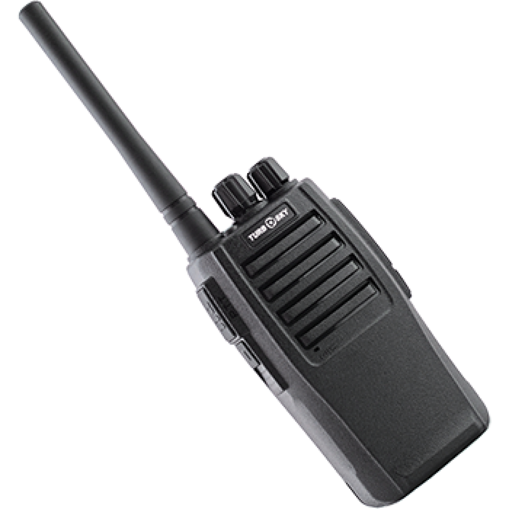
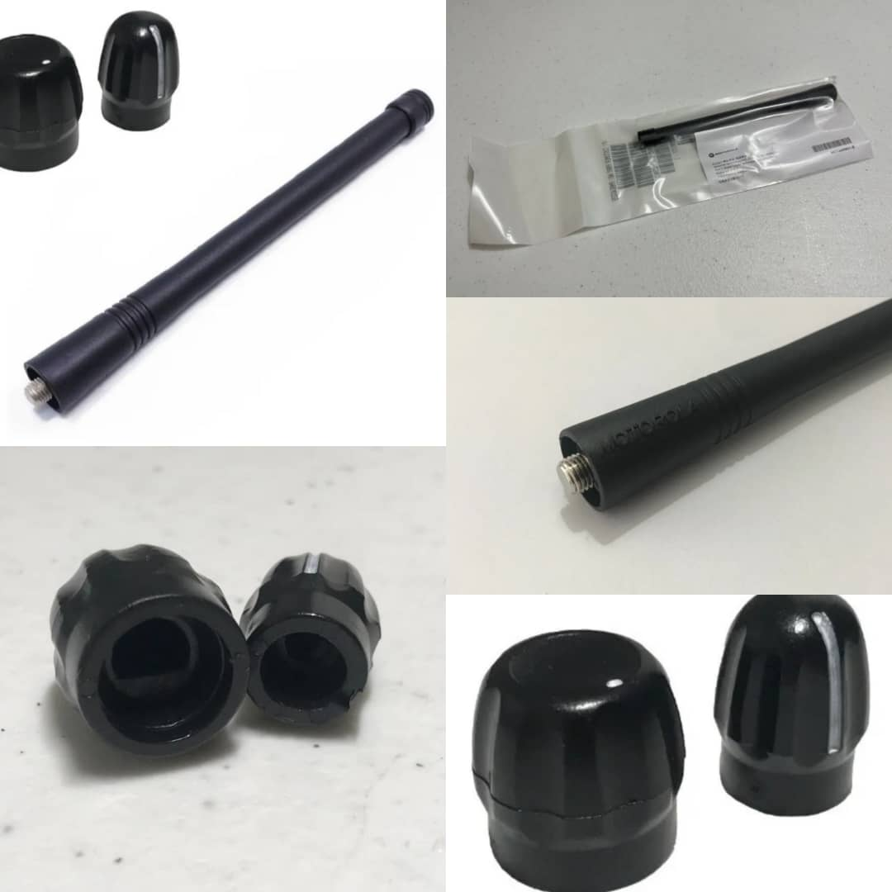
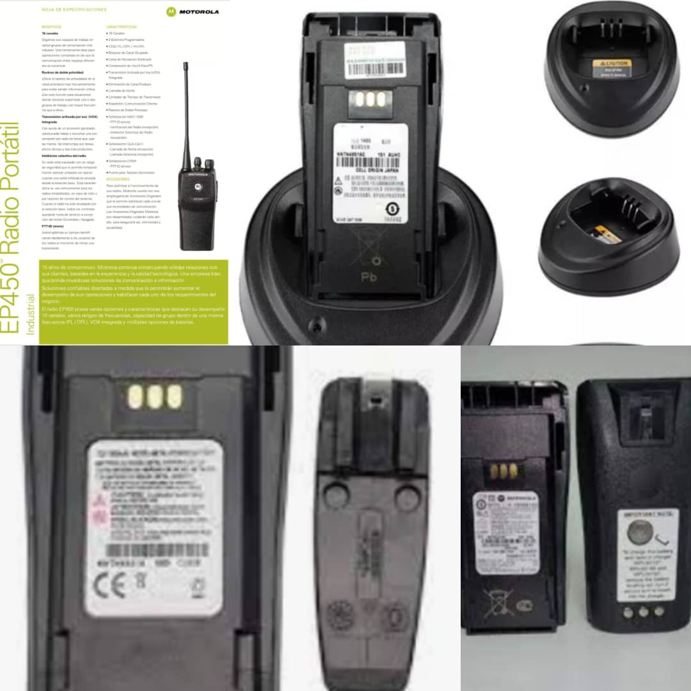
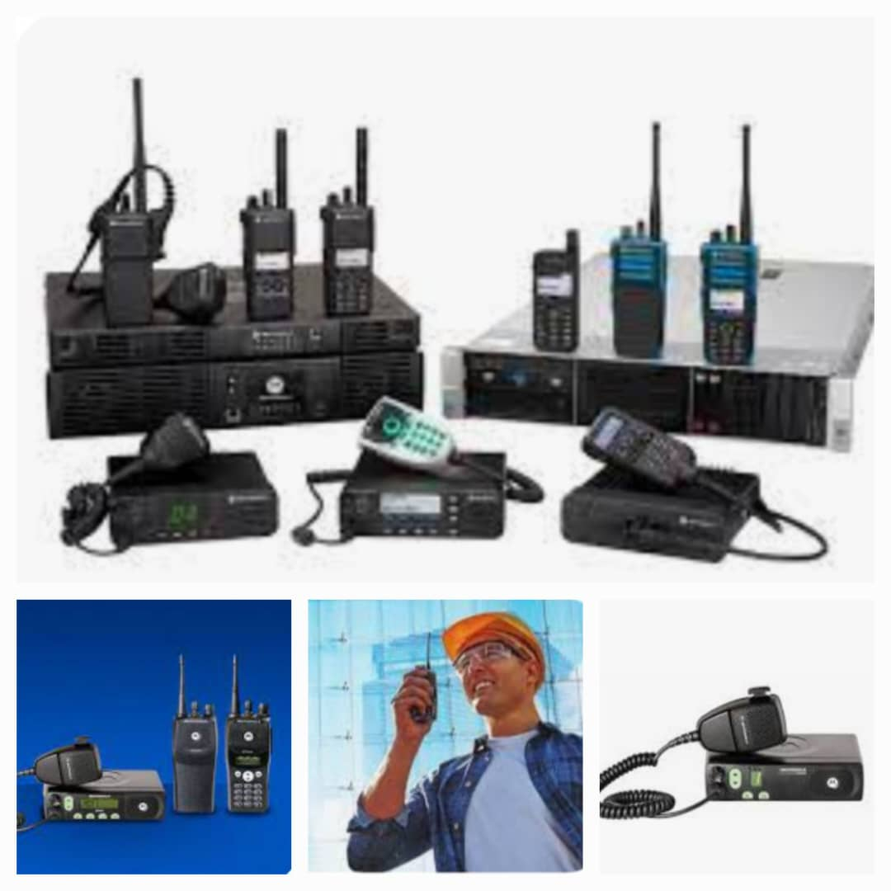

Conectando lo que más te importa
SERVICIOS
Estaciones Repetidoras
Alquiler de antenas de Telecomunicaciones, adecuadas para uso comunitario, dedicado o satelital
Suplementos electricos
Instalaciones electricas, herramientas, y todo lo referente a la ingenieria electrica y telecomunicaciones
Internet
Alquiler de sitios para nodos principales, repetidores de paso y APS
PRODUCTOS
Walkie Talkie Baofeng 888s
Equipos de comunicaciones en "VHF" y "UHF", así como equipos moviles, reparación, y configuración de los mismos, de cualquier marca
Consumibles Para Equipos Pórtatiles De Cualquier Marca
Botones, antenas, baterias, cargadores para equipos motorola, kenwood, icom, baofeng, entre otros...
Linea Motorola
Equipos motorola de la serie EP de motorola, baterias y cargadores
Puntos de repeticion
Alquiler de repetidoras den VHF, UHF y sistemas troncales
SOBRE NOSOTROS
Contamos con mas de 30 años de experiencia en la rama de las telecomunicaciones y la electrica, nuestras experiencias profesionales nos permiten ofrecerte un servicio de calidad, confianza, y el poder de ofrecerte instalaciones, reparaciones y mantenimientos de todo tipo de equipos de radiocomunicaciones e Instalaciones para la operaciones de los mismos, asi como redes de wi-fi y wi-max, Radio FM y television.
CONTACTO
📞 Teléfono: +58 416-9389424
📞 Teléfono: +58 424-7550494
📞 Teléfono: +57 311-3964568
✉️ Email: zerobeatlawyers@gmail.com
🏢 Dirección: Urb Alto Viento, Carretera Principal Via Batallón Ricaurte, Al Lado De La Subestación Electrica, N°A-1/ Rubio - Estádo Táchira